2026-06-22 @ CHESS 7b2
Final CHESS beam time of the 2026-2 run cycle.
Goals
- Mac1 multi-temperature data collection
- Beam stability measurement using yag screen and ion chamber
Participants
Steve M, Katie L, & Xiaokun P from Ando lab; support from John I & Tricia C at CHESS
Data
Root directory at CHESS: /nfs/chess/raw/2026-2/id7b2/meisburger/20260622
Root directory on OSN: s3://diffuse-chess-public/20260622
Beamline setup
| parameter | value | notes |
|---|---|---|
| X-ray energy | 14 keV @ 0.01% bandwidth | Si 111 channel cut mono inserted |
| Beam size | 100 µm x 100 µm (initially) | Slit-defined, no CRL. Adjusted to match crystal size when noted, below. |
| Flux | 9.7 x 1010 ph/s | ICol ~45,000 / 0.1 s |
| Background reduction | On-axis mirror with Mo tube | |
| Centering camera | top-view and on-axis cameras | Top view: 1.713 µm / pixel at 4x zoom ratio; On axis: 0.740 µm / pixel at 4x zoom ratio |
| Beamstop | 700 µm diameter Mo disk suspended on mylar sheet | semi-transparent |
| Data collection software | "MX Collect" (python) & SPEC | No changes since last time |
| Temperature control | Oxford cryostream was installed end-on |
Steve arrived at 10. John and Tricia set up the beamline. Steve borrowed a USB stick from Estella (thank you!) in order to record traces from the oscilloscope (Tek MSO2024B).
Samples
The following samples were grown in 24-well hanging-drop vapor diffusion trays:
| Name | Sample | Well composition | Drop composition | Notes |
|---|---|---|---|---|
| Mac1 (P43 space group) | SARS CoV2 NSP3 macrodomain and seed stock from UCSF. 40 mg/mL Mac1 in 150 mM NaCl, 20 mM Tris pH 8, 5% glycerol | 32-34% (w/vol) PEG 3000 + 100 mM CHES (pH 9.5) | 1 µL protein + 1 µL well solution + 0.5 µL seed stock (10^-4^ dilution) | 24-well hanging-drop vapor diffusion tray (2026-06-15). See Katie L Ando Lab notebook pp. 53-54. |
-
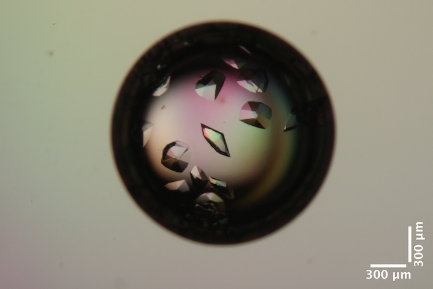
Mac1 crystals in well D2, right drop of Katie L's tray dated 2026-06-15. Well solution: 34% PEG 3k, 100 mM CHES pH 9.5. Drop: 1 µL protein + 1 µL well solution + 0.5 µL seed stock (10^-4^ dilution). -
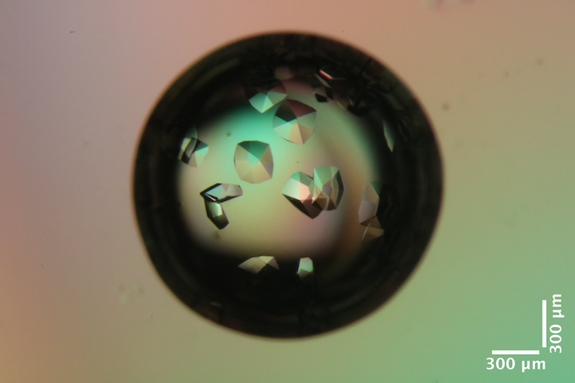
Mac1 crystals in well C2, right drop of Katie L's tray dated 2026-06-15. Well solution: 32% PEG 3k, 100 mM CHES pH 9.5. Drop: 1 µL protein + 1 µL well solution + 0.5 µL seed stock (10^-4^ dilution).
Beam stability measurement
First, steve opened the slits to 500 x 500 µm. The YAG screen was inserted at the sample position (versapin) and beam profile was visualized with the on-axis camera at ~100 Hz. A 10 second video was recorded
subdirectory: setup/beam/yag_1/
| prefix | images | exposure (ms) | zoom setting |
|---|---|---|---|
| yag_1_oac_zoom4 | 1000 | 10 | 4 |
Image processing analysis of recorded video
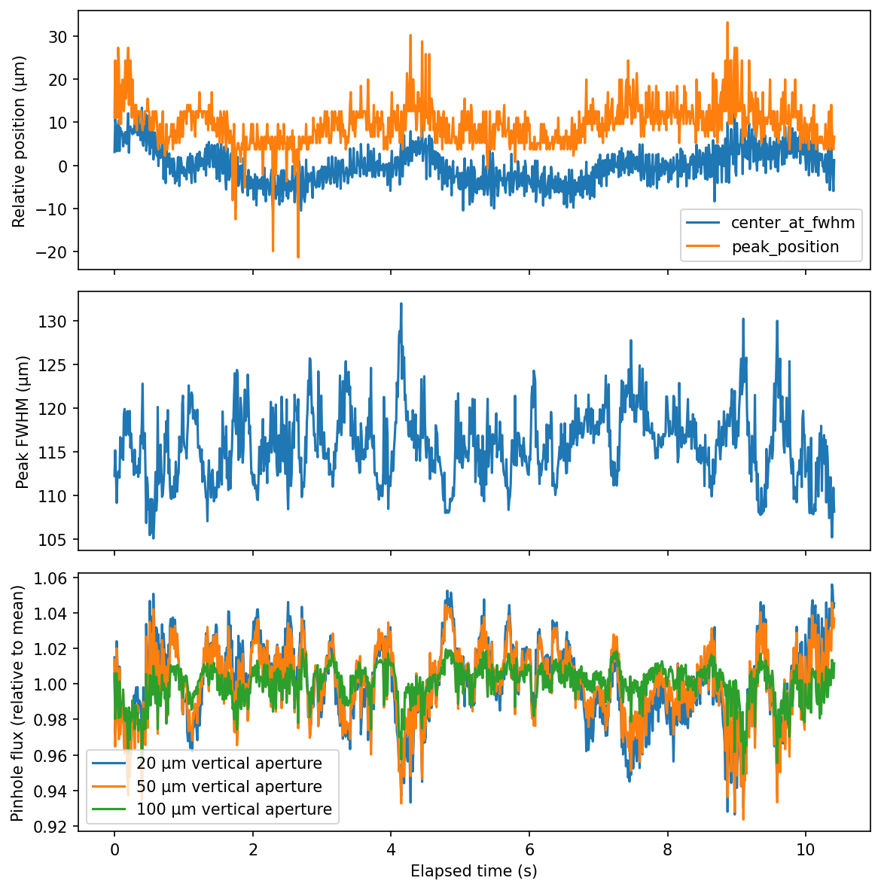
subdirectory: setup/beam/flux_20x100/
Then, steve narrowed the slits to 0.02 x 0.1 µm (v x h) and bumped the ICol gain to 500 pA/V. He recorded a trace on the scope (1 V/div, 200 ms/div).
T0003CH1.csvT0004CH1.csv(repeated for good measure)
The scope records data at a high rate, but for limited duration (2 seconds).
Next, record longer traces using the SPEC counter-timer board.
| prefix | scan number | command | notes |
|---|---|---|---|
| flux_20x100 | 1 | tseries -1 0.03 | recorded 10,000 samples (8 minutes). No fills. |
| flux_20x100 | 2 | tseries -1 0.03 | started 20s before topoff, ended ~60s into new fill |
At the same time as scan #1, I recorded another scope trace: T0005CH1.csv.
Time series analysis of SPEC recordings
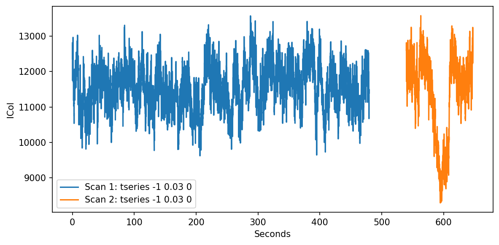
Time series analysis of oscilloscope data
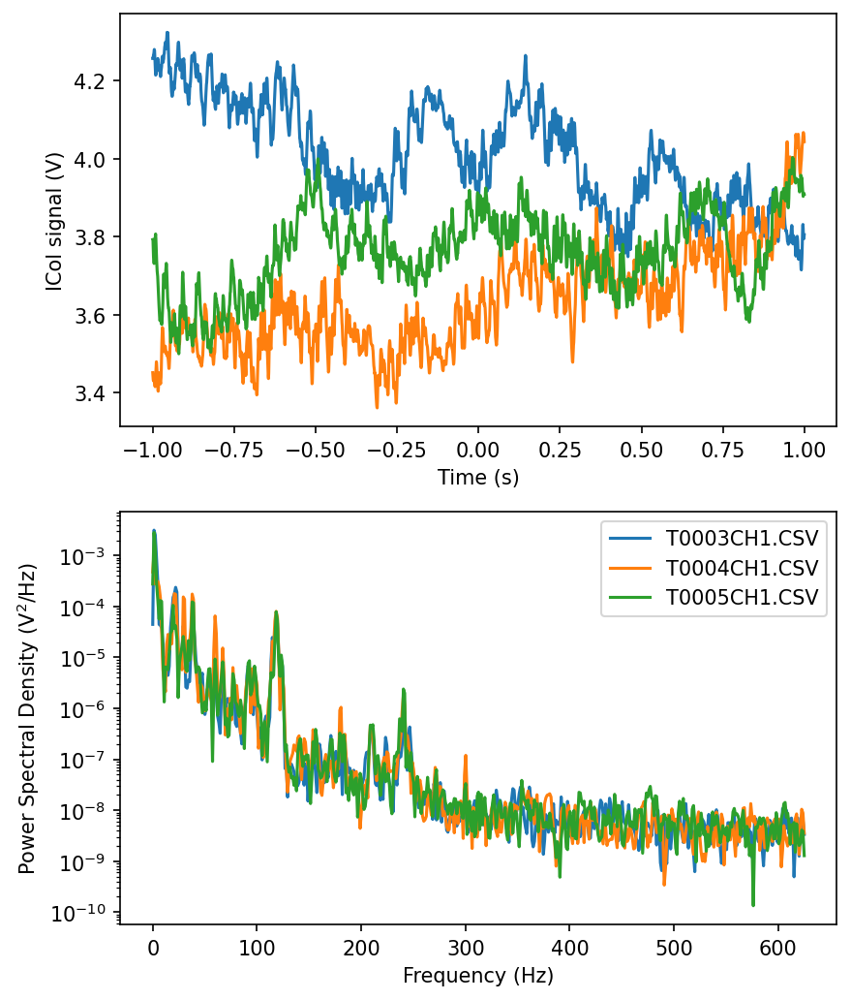
Returned slits to 100 x 100 µm. Reset ICol gain to 2 nA/V.
Check the detector background after adding Pb tape and steel plate to clean up extra scattering.
Subdirectory: setup/detector
| prefix | φ0 (deg.) | ∆φ (deg.) | images | ∆t (s) | tf (%) | d (mm) | E (keV) |
|---|---|---|---|---|---|---|---|
| air_2085 | 0 | 0 | 1 | 1 | 100 | 185 | 14 |
Looks good!
Repeated the flux measurement (reported in table above):
SPEC> ct 1
I2 = 114356
ICol = 451094
newI1 = 165882
newI0 = 235343
Calculated flux using I2 (gain: 50 nA/V): 9.7 x 1010 ph/s
Data collection
1. Mac1
Katie looped a mac1 crystal (well D2, RHS drop, tray dated 2026-06-15) using a 200 µm loop.
Subdirectory: mac1/mac1_1
Snapped images every 30˚ using the on-axis camera, prefix: mac1_1_oac_zoom4.
| prefix | φ0 (deg.) | φ1 (deg.) | ∆φ (deg.) | images | ∆t (s) | tf (%) | d (mm) | E (keV) |
|---|---|---|---|---|---|---|---|---|
| mac1_1_2086 | 0 | 360 | 0.1 | 3600 | 0.01 | 75.4 | 185 | 14 |
| mac1_1_bg_2087 | 0 | 360 | 1 | 360 | 0.1 | 75.4 | 185 | 14 |
xia2 processing
| mac1_1_2086 | |
|---|---|
| scan | 2086 |
| Mosaic spread | 0.003 |
| Resolution | 1.06 |
| Unit Cell | [89.23, 89.23, 40.29, 90.0, 90.0, 90.0] |
| Image range | [1, 3600] |
| Completeness | 91.6 |
| Multiplicity | 11.1 |
| I/sigma | 16.8 |
| Rpim | 0.017 |
| Wilson B factor | 13.51 |
| Space group | P 43 |
| temperature | 295 |
Steve inserted the cold stream and set temperature to 295 K.
2. Mac1 (multi-T)
mac1_2_295K_1_oac_zoom4
Katie looped another mac1 crystal from the same drop. She placed 2 µL of well solution in the sleeve, cut short so that the meniscus is close to the crystal.
Subdirectory: mac1/mac1_2
Attenuate 5-fold and collect temperature series.
Saved images every 30˚ at zoom 4, prefix: mac1_2_295K_1_oac_zoom4
| prefix | φ0 (deg.) | φ1 (deg.) | ∆φ (deg.) | images | ∆t (s) | tf (%) | d (mm) | E (keV) |
|---|---|---|---|---|---|---|---|---|
| mac1_2_295K_1_2088 | 0 | 360 | 0.1 | 3600 | 0.01 | 17.3 | 185 | 14 |
| mac1_2_295K_1_bg_2089 | 0 | 360 | 1 | 360 | 0.1 | 17.3 | 185 | 14 |
Ramped temperature @ 120 K / hour to 280 K.
| prefix | φ0 (deg.) | φ1 (deg.) | ∆φ (deg.) | images | ∆t (s) | tf (%) | d (mm) | E (keV) |
|---|---|---|---|---|---|---|---|---|
| mac1_2_280K_2090 | 0 | 360 | 0.1 | 3600 | 0.01 | 17.3 | 185 | 14 |
| mac1_2_280K_bg_2091 | 0 | 360 | 1 | 360 | 0.1 | 17.3 | 185 | 14 |
mac1_2_295K_2_oac_zoom4
Ramped back to 295 K @ 120 K / hour.
Saved images every 30˚ again for reference (zoom 4), prefix: mac1_2_295K_2_oac_zoom4
| prefix | φ0 (deg.) | φ1 (deg.) | ∆φ (deg.) | images | ∆t (s) | tf (%) | d (mm) | E (keV) |
|---|---|---|---|---|---|---|---|---|
| mac1_2_295K_2_2092 | 0 | 360 | 0.1 | 3600 | 0.01 | 17.3 | 185 | 14 |
| mac1_2_295K_2_bg_2093 | 0 | 360 | 1 | 360 | 0.1 | 17.3 | 185 | 14 |
mac1_2_310K_oac_zoom4
Ramped up to 310 K @ 120 K / hour.
Snapped images every 30˚ again for reference (zoom 4), prefix: mac1_2_310K_oac_zoom4
| prefix | φ0 (deg.) | φ1 (deg.) | ∆φ (deg.) | images | ∆t (s) | tf (%) | d (mm) | E (keV) |
|---|---|---|---|---|---|---|---|---|
| mac1_2_310K_2094 | 0 | 360 | 0.1 | 3600 | 0.01 | 17.3 | 185 | 14 |
| mac1_2_310K_bg_2095 | 0 | 360 | 1 | 360 | 0.1 | 17.3 | 185 | 14 |
mac1_2_295K_3_oac_zoom4
Ramped back down to 295 K @ 120 K / hour.
Snapped images every 30˚ again for reference (zoom 4), prefix: mac1_2_295K_3_oac_zoom4
| prefix | φ0 (deg.) | φ1 (deg.) | ∆φ (deg.) | images | ∆t (s) | tf (%) | d (mm) | E (keV) |
|---|---|---|---|---|---|---|---|---|
| mac1_2_295K_3_2096 | 0 | 360 | 0.1 | 3600 | 0.01 | 17.3 | 185 | 14 |
| mac1_2_295K_3_bg_2097 | 0 | 360 | 1 | 360 | 0.1 | 17.3 | 185 | 14 |
xia2 processing
| mac1_2_295K_1_2088 | mac1_2_280K_2090 | mac1_2_295K_2_2092 | mac1_2_310K_2094 | mac1_2_295K_3_2096 | |
|---|---|---|---|---|---|
| scan | 2088 | 2090 | 2092 | 2094 | 2096 |
| Mosaic spread | 0.008 | 0.066 | 0.048 | 0.015 | 0.007 |
| Resolution | 1.14 | 1.15 | 1.18 | 1.2 | 1.18 |
| Unit Cell | [89.15, 89.15, 40.16, 90.0, 90.0, 90.0] | [89.07, 89.07, 39.96, 90.0, 90.0, 90.0] | [89.17, 89.17, 40.21, 90.0, 90.0, 90.0] | [89.23, 89.23, 40.28, 90.0, 90.0, 90.0] | [89.18, 89.18, 40.19, 90.0, 90.0, 90.0] |
| Image range | [1, 3600] | [1, 3600] | [1, 3600] | [1, 3600] | [1, 3600] |
| Completeness | 98.9 | 99.3 | 100.0 | 100.0 | 100.0 |
| Multiplicity | 12.1 | 12.2 | 12.6 | 12.8 | 12.6 |
| I/sigma | 10.4 | 10.2 | 11.0 | 11.4 | 10.8 |
| Rpim | 0.029 | 0.029 | 0.027 | 0.027 | 0.028 |
| Wilson B factor | 13.78 | 12.79 | 13.77 | 14.97 | 14.76 |
| Space group | P 43 | P 43 | P 43 | P 43 | P 43 |
| temperature | 295 | 280 | 295 | 310 | 295 |
It's interesting that the mosaic spread first increased when going from 295 to 280K, and then it slowly recovered until 295K_3, which has the same mosaic spread as the first dataset 295K_1. Is this telling us the time-dependence of recovery from a thermal shock, or perhaps it is accelerated by thermal annealing?
Warning
We noticed that the last batch of micro-RT tubings we ordered had many that were unsealed at the end. Come on, MiTeGen! Yikes. We tried to select the best ones, but were not 100% confident that they were sealed well. Steve discovered that you can re-seal them by heating a flat tweezer with a soldering iron (grab the soldering iron tip for ~20 seconds, then squeeze the tube for ~2 seconds). He went ahead and re-sealed all of the tubes. From now on, we're using the re-sealed tubes.
3. Mac1 (multi-T)
mac1_3_295K_1_oac_zoom4
Katie looped another mac1 crystal from the same well using a 200 µm loop with 3 µL of reservoir solution in the sleeve, and sealed the sleeve to the base using grease.
Subdirectory: mac1/mac1_3
Snapped images every 30˚ using the on-axis camera at 4x zoom, prefix: mac1_3_295K_1_oac_zoom4
| prefix | φ0 (deg.) | φ1 (deg.) | ∆φ (deg.) | images | ∆t (s) | tf (%) | d (mm) | E (keV) |
|---|---|---|---|---|---|---|---|---|
| mac1_3_295K_1_2098 | 0 | 360 | 0.1 | 3600 | 0.01 | 17.3 | 185 | 14 |
| mac1_3_295K_1_bg_2099 | 0 | 360 | 1 | 360 | 0.1 | 17.3 | 185 | 14 |
mac1_3_280K_oac_zoom4
Ramped to 280 K @ 120 K / hour
Snapped images every 30˚ using the on-axis camera at 4x zoom, prefix: mac1_3_280K_oac_zoom4
| prefix | φ0 (deg.) | φ1 (deg.) | ∆φ (deg.) | images | ∆t (s) | tf (%) | d (mm) | E (keV) |
|---|---|---|---|---|---|---|---|---|
| mac1_3_280K_2100 | 0 | 360 | 0.1 | 3600 | 0.01 | 17.3 | 185 | 14 |
| mac1_3_280K_bg_2101 | 0 | 360 | 1 | 360 | 0.1 | 17.3 | 185 | 14 |
mac1_3_295K_2_oac_zoom4
Ramped back to 295 K @ 120 K / hour
Snapped images every 30˚ using the on-axis camera at 4x zoom, prefix: mac1_3_295K_2_oac_zoom4
| prefix | φ0 (deg.) | φ1 (deg.) | ∆φ (deg.) | images | ∆t (s) | tf (%) | d (mm) | E (keV) |
|---|---|---|---|---|---|---|---|---|
| mac1_3_295K_2_2102 | 0 | 360 | 0.1 | 3600 | 0.01 | 17.3 | 185 | 14 |
| mac1_3_295K_2_bg_2103 | 0 | 360 | 1 | 360 | 0.1 | 17.3 | 185 | 14 |
mac1_3_310K_oac_zoom4
Ramped to 310 K @ 120 K / hour
Snapped images every 30˚ using the on-axis camera at 4x zoom, prefix: mac1_3_310K_oac_zoom4
| prefix | φ0 (deg.) | φ1 (deg.) | ∆φ (deg.) | images | ∆t (s) | tf (%) | d (mm) | E (keV) |
|---|---|---|---|---|---|---|---|---|
| mac1_3_310K_2104 | 0 | 360 | 0.1 | 3600 | 0.01 | 17.3 | 185 | 14 |
| mac1_3_310K_bg_2105 | 0 | 360 | 1 | 360 | 0.1 | 17.3 | 185 | 14 |
mac1_3_295K_3_oac_zoom4
Ramped back to 295 K @ 120 K / hour
Snapped images every 30˚ using the on-axis camera at 4x zoom, prefix: mac1_3_295K_3_oac_zoom4
| prefix | φ0 (deg.) | φ1 (deg.) | ∆φ (deg.) | images | ∆t (s) | tf (%) | d (mm) | E (keV) |
|---|---|---|---|---|---|---|---|---|
| mac1_3_295K_3_2106 | 0 | 360 | 0.1 | 3600 | 0.01 | 17.3 | 185 | 14 |
| mac1_3_295K_3_bg_2107 | 0 | 360 | 1 | 360 | 0.1 | 17.3 | 185 | 14 |
mac1_3_325K_oac_zoom4
I'm curious. What happens if you go to even higher temperature?
Ramped to 325 K @ 120 K / hour
Snapped images every 30˚ using the on-axis camera at 4x zoom, prefix: mac1_3_325K_oac_zoom4
| prefix | φ0 (deg.) | φ1 (deg.) | ∆φ (deg.) | images | ∆t (s) | tf (%) | d (mm) | E (keV) |
|---|---|---|---|---|---|---|---|---|
| mac1_3_325K_2108 | 0 | 360 | 0.1 | 3600 | 0.01 | 17.3 | 185 | 14 |
| mac1_3_325K_bg_2109 | 0 | 360 | 1 | 360 | 0.1 | 17.3 | 185 | 14 |
mac1_3_295K_4_oac_zoom4
Ramped back to 295 K @ 120 K / hour
Snapped images every 30˚ using the on-axis camera at 4x zoom, prefix: mac1_3_295K_4_oac_zoom4
| prefix | φ0 (deg.) | φ1 (deg.) | ∆φ (deg.) | images | ∆t (s) | tf (%) | d (mm) | E (keV) |
|---|---|---|---|---|---|---|---|---|
| mac1_3_295K_4_2110 | 0 | 360 | 0.1 | 3600 | 0.01 | 17.3 | 185 | 14 |
| mac1_3_295K_4_bg_2111 | 0 | 360 | 1 | 360 | 0.1 | 17.3 | 185 | 14 |
xia2 processing
| mac1_3_295K_1_2098 | mac1_3_280K_2100 | mac1_3_295K_2_2102 | mac1_3_310K_2104 | mac1_3_295K_3_2106 | mac1_3_325K_2108 | mac1_3_295K_4_2110 | |
|---|---|---|---|---|---|---|---|
| scan | 2098 | 2100 | 2102 | 2104 | 2106 | 2108 | 2110 |
| Mosaic spread | 0.003 | 0.004 | 0.007 | 0.023 | 0.015 | 0.238 | 0.193 |
| Resolution | 1.14 | 1.12 | 1.16 | 1.2 | 1.19 | 1.58 | 1.46 |
| Unit Cell | [89.19, 89.19, 40.24, 90.0, 90.0, 90.0] | [89.13, 89.13, 40.16, 90.0, 90.0, 90.0] | [89.16, 89.16, 40.18, 90.0, 90.0, 90.0] | [89.17, 89.17, 40.16, 90.0, 90.0, 90.0] | [89.27, 89.27, 40.37, 90.0, 90.0, 90.0] | [89.09, 89.09, 40.07, 90.0, 90.0, 90.0] | [89.32, 89.32, 40.45, 90.0, 90.0, 90.0] |
| Image range | [1, 3600] | [1, 3600] | [1, 3600] | [1, 3600] | [1, 3600] | [1, 3600] | [1, 3600] |
| Completeness | 98.4 | 96.8 | 99.4 | 100.0 | 100.0 | 99.9 | 100.0 |
| Multiplicity | 12.1 | 11.9 | 12.4 | 12.8 | 12.7 | 13.6 | 13.7 |
| I/sigma | 10.1 | 10.2 | 11.1 | 11.1 | 10.7 | 6.6 | 9.1 |
| Rpim | 0.031 | 0.03 | 0.028 | 0.027 | 0.028 | 0.052 | 0.046 |
| Wilson B factor | 14.06 | 13.38 | 14.39 | 14.94 | 14.61 | 20.42 | 17.37 |
| Space group | P 43 | P 43 | P 43 | P 43 | P 43 | P 43 | P 43 |
| temperature | 295 | 280 | 295 | 310 | 295 | 325 | 295 |
4. Mac1 (multi-T)
mac1_4_295K_1_oac_zoom2
Cryostream set to 295 K
Snapped images every 30˚ using the on-axis camera at 2x zoom, prefix: mac1_4_295K_1_oac_zoom2
Katie looped another mac1 P43 crystal from the same well using a 300 µm loop. 3 µL of well solution was added to the sleeve and the sleeve was sealed to the base using grease.
Subdirectory: mac1/mac1_4
| prefix | φ0 (deg.) | φ1 (deg.) | ∆φ (deg.) | images | ∆t (s) | tf (%) | d (mm) | E (keV) |
|---|---|---|---|---|---|---|---|---|
| mac1_4_295K_1_2112 | 0 | 360 | 0.1 | 3600 | 0.01 | 17.3 | 185 | 14 |
| mac1_4_295K_1_bg_2113 | 0 | 360 | 1 | 360 | 0.1 | 17.3 | 185 | 14 |
mac1_4_280K_oac_zoom2
Ramp to 280 K @ 120 K / hour.
Snapped images every 30˚ using the on-axis camera at 2x zoom, prefix: mac1_4_280K_oac_zoom2
| prefix | φ0 (deg.) | φ1 (deg.) | ∆φ (deg.) | images | ∆t (s) | tf (%) | d (mm) | E (keV) |
|---|---|---|---|---|---|---|---|---|
| mac1_4_280K_2114 | 0 | 360 | 0.1 | 3600 | 0.01 | 17.3 | 185 | 14 |
| mac1_4_280K_bg_2115 | 0 | 360 | 1 | 360 | 0.1 | 17.3 | 185 | 14 |
mac1_4_295K_2_oac_zoom2
Ramp to 295 K @ 120 K / hour.
Snapped images every 30˚ using the on-axis camera at 4x zoom, prefix: mac1_4_295K_2_oac_zoom2
| prefix | φ0 (deg.) | φ1 (deg.) | ∆φ (deg.) | images | ∆t (s) | tf (%) | d (mm) | E (keV) |
|---|---|---|---|---|---|---|---|---|
| mac1_4_295K_2_2116 | 0 | 360 | 0.1 | 3600 | 0.01 | 17.3 | 185 | 14 |
| mac1_4_295K_2_bg_2117 | 0 | 360 | 1 | 360 | 0.1 | 17.3 | 185 | 14 |
mac1_4_310K_oac_zoom2
Ramp to 310 K @ 120 K / hour.
Snapped images every 30˚ using the on-axis camera at 4x zoom, prefix: mac1_4_310K_oac_zoom2
| prefix | φ0 (deg.) | φ1 (deg.) | ∆φ (deg.) | images | ∆t (s) | tf (%) | d (mm) | E (keV) |
|---|---|---|---|---|---|---|---|---|
| mac1_4_310K_2118 | 0 | 360 | 0.1 | 3600 | 0.01 | 17.3 | 185 | 14 |
| mac1_4_310K_bg_2119 | 0 | 360 | 1 | 360 | 0.1 | 17.3 | 185 | 14 |
mac1_4_295K_3_real_oac_zoom2
Ramp to 295 K @ 120 K / hour.
Snapped images every 30˚ using the on-axis camera at 4x zoom, prefix: mac1_4_295K_3_real_oac_zoom2
file name error
The crystal images for 310K were accidentally saved twice. The second time, they had the file name prefix mac1_4_295K_3. The correct 295K_3 images are called mac1_4_295K_3_real.
| prefix | φ0 (deg.) | φ1 (deg.) | ∆φ (deg.) | images | ∆t (s) | tf (%) | d (mm) | E (keV) |
|---|---|---|---|---|---|---|---|---|
| mac1_4_295K_3_2120 | 0 | 360 | 0.1 | 3600 | 0.01 | 17.3 | 185 | 14 |
| mac1_4_295K_3_bg_2121 | 0 | 360 | 1 | 360 | 0.1 | 17.3 | 185 | 14 |
At the end when Katie removed the crystal from the goniometer, she saw condensation on the sleeve.
xia2 processing
| mac1_4_295K_1_2112 | mac1_4_280K_2114 | mac1_4_295K_2_2116 | mac1_4_310K_2118 | mac1_4_295K_3_2120 | |
|---|---|---|---|---|---|
| scan | 2112 | 2114 | 2116 | 2118 | 2120 |
| Mosaic spread | 0.003 | 0.004 | 0.005 | 0.033 | 0.013 |
| Resolution | 1.13 | 1.11 | 1.14 | 1.18 | 1.16 |
| Unit Cell | [89.26, 89.26, 40.36, 90.0, 90.0, 90.0] | [89.22, 89.22, 40.32, 90.0, 90.0, 90.0] | [89.27, 89.27, 40.37, 90.0, 90.0, 90.0] | [89.14, 89.14, 40.13, 90.0, 90.0, 90.0] | [89.28, 89.28, 40.38, 90.0, 90.0, 90.0] |
| Image range | [1, 3600] | [1, 3600] | [1, 3600] | [1, 3600] | [1, 3600] |
| Completeness | 99.3 | 98.6 | 99.5 | 100.0 | 99.9 |
| Multiplicity | 11.8 | 11.5 | 12.0 | 12.6 | 12.3 |
| I/sigma | 10.3 | 9.7 | 9.3 | 10.1 | 11.1 |
| Rpim | 0.03 | 0.031 | 0.032 | 0.028 | 0.026 |
| Wilson B factor | 14.01 | 13.38 | 14.3 | 14.67 | 14.68 |
| Space group | P 43 | P 43 | P 43 | P 43 | P 43 |
| temperature | 295 | 280 | 295 | 310 | 295 |
5. Mac1 (multi-T)
mac1_5_295K_1_oac_zoom1
Steve scooped up a bunch of crystals from well C2 using a micromesh + sleeve with 3 µL of well solution in the tip. The capillary is not clean, it got grease on the oustide. So this will not be so useful for diffuse scattering. The goal here is to see if the temperature-dependent changes we're seeing (wrt mosaicity, unit cell, etc) are observed for all crystals in the loop, or if changes are crystal-specific.
The goniometer positions for each crystal were saved as A-->H in SPEC, so that the illuminated crystal volumes can be identical at each temperature.
Subdirectory: mac1/mac1_5
Snapped images every 30˚ using the on-axis camera at 1x zoom showing the entire loop (prefix: mac1_5_295K_1_oac_zoom1), and at each crystal position at 4x zoom.
-
A
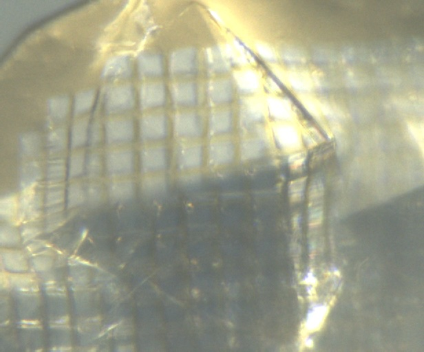
-
B
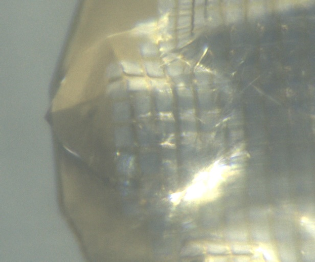
-
C
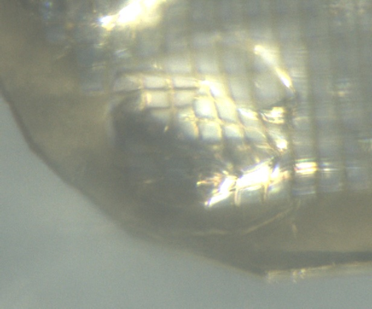
-
D
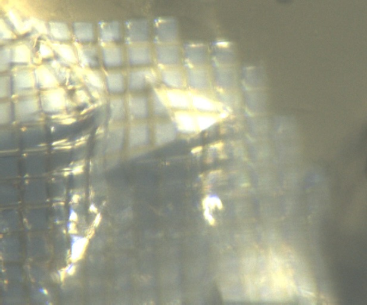
-
E
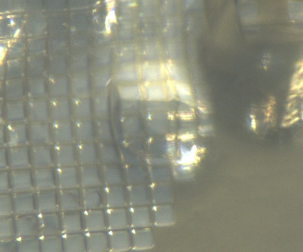
-
F
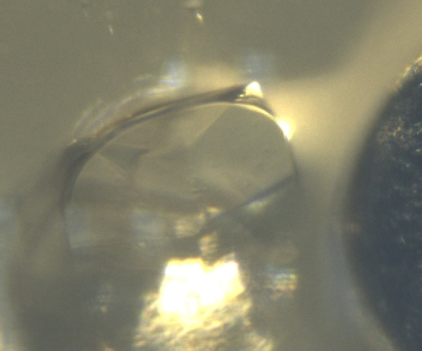
-
G
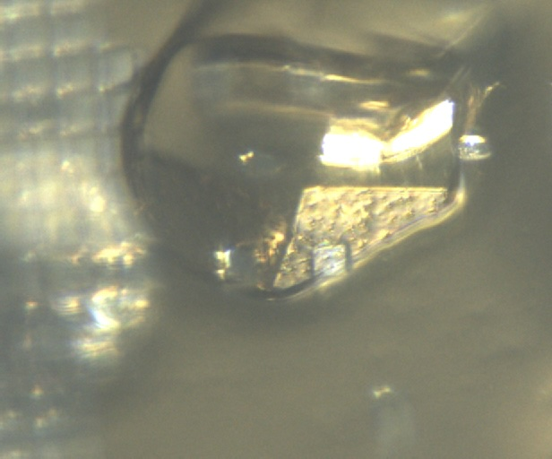
-
H
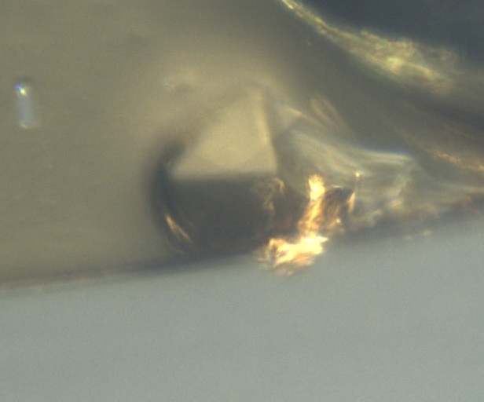
| prefix | φ0 (deg.) | φ1 (deg.) | ∆φ (deg.) | images | ∆t (s) | tf (%) | d (mm) | E (keV) |
|---|---|---|---|---|---|---|---|---|
| mac1_5A_295K_1_2122 | 220 | 290 | 0.1 | 700 | 0.01 | 100 | 185 | 14 |
| mac1_5B_295K_1_2123 | 220 | 290 | 0.1 | 700 | 0.01 | 100 | 185 | 14 |
| mac1_5C_295K_1_2124 | 220 | 290 | 0.1 | 700 | 0.01 | 100 | 185 | 14 |
| mac1_5D_295K_1_2125 | 220 | 290 | 0.1 | 700 | 0.01 | 100 | 185 | 14 |
| mac1_5E_295K_1_2126 | 220 | 290 | 0.1 | 700 | 0.01 | 100 | 185 | 14 |
| mac1_5F_295K_1_2127 | 220 | 290 | 0.1 | 700 | 0.01 | 100 | 185 | 14 |
| mac1_5G_295K_1_2128 | 220 | 290 | 0.1 | 700 | 0.01 | 100 | 185 | 14 |
| mac1_5H_295K_1_2129 | 220 | 290 | 0.1 | 700 | 0.01 | 100 | 185 | 14 |
| mac1_5A_295K_1_bg_2130 | 220 | 290 | 1 | 70 | 0.1 | 100 | 185 | 14 |
| mac1_5B_295K_1_bg_2131 | 220 | 290 | 1 | 70 | 0.1 | 100 | 185 | 14 |
| mac1_5C_295K_1_bg_2132 | 220 | 290 | 1 | 70 | 0.1 | 100 | 185 | 14 |
| mac1_5D_295K_1_bg_2133 | 220 | 290 | 1 | 70 | 0.1 | 100 | 185 | 14 |
| mac1_5E_295K_1_bg_2134 | 220 | 290 | 1 | 70 | 0.1 | 100 | 185 | 14 |
| mac1_5F_295K_1_bg_2135 | 220 | 290 | 1 | 70 | 0.1 | 100 | 185 | 14 |
| mac1_5G_295K_1_bg_2136 | 220 | 290 | 1 | 70 | 0.1 | 100 | 185 | 14 |
| mac1_5H_295K_1_bg_2137 | 220 | 290 | 1 | 70 | 0.1 | 100 | 185 | 14 |
multiple lattices
Diffraction collected at position C, F, and G have peaks from multiple lattices. I'll skip these on subsequent data collecitons.
diffraction peaks in background datasets
Most of the background datasets have diffraciton peaks, either from the dirty capillary or from nearby crystals on the loop. Use with caution.
Ramped temperature down to 280 K @ 120 K / hour.
Continue collection, but skip C, F, G
| prefix | φ0 (deg.) | φ1 (deg.) | ∆φ (deg.) | images | ∆t (s) | tf (%) | d (mm) | E (keV) |
|---|---|---|---|---|---|---|---|---|
| mac1_5A_280K_2138 | 220 | 290 | 0.1 | 700 | 0.01 | 100 | 185 | 14 |
| mac1_5B_280K_2139 | 220 | 290 | 0.1 | 700 | 0.01 | 100 | 185 | 14 |
| mac1_5D_280K_2140 | 220 | 290 | 0.1 | 700 | 0.01 | 100 | 185 | 14 |
| mac1_5E_280K_2141 | 220 | 290 | 0.1 | 700 | 0.01 | 100 | 185 | 14 |
| mac1_5H_280K_2142 | 220 | 290 | 0.1 | 700 | 0.01 | 100 | 185 | 14 |
| mac1_5H_280K_bg_2143* | 220 | 290 | 1 | 70 | 0.1 | 100 | 185 | 14 |
| mac1_5B_280K_bg_2144 | 220 | 290 | 1 | 70 | 0.1 | 100 | 185 | 14 |
| mac1_5D_280K_bg_2145 | 220 | 290 | 1 | 70 | 0.1 | 100 | 185 | 14 |
| mac1_5E_280K_bg_2146 | 220 | 290 | 1 | 70 | 0.1 | 100 | 185 | 14 |
| mac1_5H_280K_bg_2147 | 220 | 290 | 1 | 70 | 0.1 | 100 | 185 | 14 |
incorrect file name
mac1_5H_280K_bg_2143 should have been labeled 5A instead of 5H.
Ramped back up to 295 K @ 120 K / hour.
| prefix | φ0 (deg.) | φ1 (deg.) | ∆φ (deg.) | images | ∆t (s) | tf (%) | d (mm) | E (keV) |
|---|---|---|---|---|---|---|---|---|
| mac1_5A_295K_2_2148 | 220 | 290 | 0.1 | 700 | 0.01 | 100 | 185 | 14 |
| mac1_5B_295K_2_2149 | 220 | 290 | 0.1 | 700 | 0.01 | 100 | 185 | 14 |
| mac1_5D_295K_2_2150 | 220 | 290 | 0.1 | 700 | 0.01 | 100 | 185 | 14 |
| mac1_5E_295K_2_2151 | 220 | 290 | 0.1 | 700 | 0.01 | 100 | 185 | 14 |
| mac1_5H_295K_2_2152 | 220 | 290 | 0.1 | 700 | 0.01 | 100 | 185 | 14 |
| mac1_5H_295K_2_bg_2153* | 220 | 290 | 1 | 70 | 0.1 | 100 | 185 | 14 |
| mac1_5B_295K_2_bg_2154 | 220 | 290 | 1 | 70 | 0.1 | 100 | 185 | 14 |
| mac1_5D_295K_2_bg_2155 | 220 | 290 | 1 | 70 | 0.1 | 100 | 185 | 14 |
| mac1_5E_295K_2_bg_2156 | 220 | 290 | 1 | 70 | 0.1 | 100 | 185 | 14 |
| mac1_5H_295K_2_bg_2157 | 220 | 290 | 1 | 70 | 0.1 | 100 | 185 | 14 |
incorrect file name
mac1_5H_295K_2_bg_2153 should have been labeled 5A instead of 5H.
Ramped back up to 310 K @ 120 K / hour.
| prefix | φ0 (deg.) | φ1 (deg.) | ∆φ (deg.) | images | ∆t (s) | tf (%) | d (mm) | E (keV) |
|---|---|---|---|---|---|---|---|---|
| mac1_5A_310K_2158 | 220 | 290 | 0.1 | 700 | 0.01 | 100 | 185 | 14 |
| mac1_5B_310K_2159 | 220 | 290 | 0.1 | 700 | 0.01 | 100 | 185 | 14 |
| mac1_5D_310K_2160 | 220 | 290 | 0.1 | 700 | 0.01 | 100 | 185 | 14 |
| mac1_5E_310K_2161 | 220 | 290 | 0.1 | 700 | 0.01 | 100 | 185 | 14 |
| mac1_5H_310K_2162 | 220 | 290 | 0.1 | 700 | 0.01 | 100 | 185 | 14 |
| mac1_5A_310K_bg_2163 | 220 | 290 | 1 | 70 | 0.1 | 100 | 185 | 14 |
| mac1_5B_310K_bg_2164 | 220 | 290 | 1 | 70 | 0.1 | 100 | 185 | 14 |
| mac1_5D_310K_bg_2165 | 220 | 290 | 1 | 70 | 0.1 | 100 | 185 | 14 |
| mac1_5E_310K_bg_2166 | 220 | 290 | 1 | 70 | 0.1 | 100 | 185 | 14 |
| mac1_5H_310K_bg_2167 | 220 | 290 | 1 | 70 | 0.1 | 100 | 185 | 14 |
mac1_5_295K_3_oac_zoom1
Ramped back down to 295 K @ 120 K / hour.
Snapped images every 30˚ at 1x zoom, prefix: mac1_5_295K_3_oac_zoom1
| prefix | φ0 (deg.) | φ1 (deg.) | ∆φ (deg.) | images | ∆t (s) | tf (%) | d (mm) | E (keV) |
|---|---|---|---|---|---|---|---|---|
| mac1_5A_295K_3_2168 | 220 | 290 | 0.1 | 700 | 0.01 | 100 | 185 | 14 |
| mac1_5B_295K_3_2169 | 220 | 290 | 0.1 | 700 | 0.01 | 100 | 185 | 14 |
| mac1_5D_295K_3_2170 | 220 | 290 | 0.1 | 700 | 0.01 | 100 | 185 | 14 |
| mac1_5E_295K_3_2171 | 220 | 290 | 0.1 | 700 | 0.01 | 100 | 185 | 14 |
| mac1_5H_295K_3_2172 | 220 | 290 | 0.1 | 700 | 0.01 | 100 | 185 | 14 |
| mac1_5A_295K_3_bg_2173 | 220 | 290 | 1 | 70 | 0.1 | 100 | 185 | 14 |
| mac1_5B_295K_3_bg_2174 | 220 | 290 | 1 | 70 | 0.1 | 100 | 185 | 14 |
| mac1_5D_295K_3_bg_2175 | 220 | 290 | 1 | 70 | 0.1 | 100 | 185 | 14 |
| mac1_5E_295K_3_bg_2176* | 220 | 290 | 1 | 70 | 0.1 | 100 | 185 | 14 |
| mac1_5E_295K_3_bg_2177 | 220 | 290 | 1 | 70 | 0.1 | 100 | 185 | 14 |
| mac1_5H_295K_3_bg_2178 | 220 | 290 | 1 | 70 | 0.1 | 100 | 185 | 14 |
incorrectly named dataset
mac1_5E_295K_3_bg_2176 was a mistake. This dataset was taken at position D, not E. mac1_5E_295K_3_bg_2177 is the true E dataset.
For fun, let's try ramping down to 270 K. Does it freeze?
| prefix | φ0 (deg.) | φ1 (deg.) | ∆φ (deg.) | images | ∆t (s) | tf (%) | d (mm) | E (keV) |
|---|---|---|---|---|---|---|---|---|
| mac1_5A_270K_2179 | 220 | 290 | 0.1 | 700 | 0.01 | 100 | 185 | 14 |
| mac1_5B_270K_2180 | 220 | 290 | 0.1 | 700 | 0.01 | 100 | 185 | 14 |
| mac1_5D_270K_2181 | 220 | 290 | 0.1 | 700 | 0.01 | 100 | 185 | 14 |
| mac1_5E_270K_2182 | 220 | 290 | 0.1 | 700 | 0.01 | 100 | 185 | 14 |
| mac1_5H_270K_2183 | 220 | 290 | 0.1 | 700 | 0.01 | 100 | 185 | 14 |
| mac1_5A_270K_bg_2184 | 220 | 290 | 1 | 70 | 0.1 | 100 | 185 | 14 |
| mac1_5B_270K_bg_2185 | 220 | 290 | 1 | 70 | 0.1 | 100 | 185 | 14 |
| mac1_5D_270K_bg_2186 | 220 | 290 | 1 | 70 | 0.1 | 100 | 185 | 14 |
| mac1_5E_270K_bg_2187 | 220 | 290 | 1 | 70 | 0.1 | 100 | 185 | 14 |
| mac1_5H_270K_bg_2188 | 220 | 290 | 1 | 70 | 0.1 | 100 | 185 | 14 |
Nope!
Warming back up to 295 K at 120 K / hour.
| prefix | φ0 (deg.) | φ1 (deg.) | ∆φ (deg.) | images | ∆t (s) | tf (%) | d (mm) | E (keV) |
|---|---|---|---|---|---|---|---|---|
| mac1_5A_295K_4_2189 | 220 | 290 | 0.1 | 700 | 0.01 | 100 | 185 | 14 |
| mac1_5B_295K_4_2190 | 220 | 290 | 0.1 | 700 | 0.01 | 100 | 185 | 14 |
| mac1_5D_295K_4_2191 | 220 | 290 | 0.1 | 700 | 0.01 | 100 | 185 | 14 |
| mac1_5E_295K_4_2192 | 220 | 290 | 0.1 | 700 | 0.01 | 100 | 185 | 14 |
| mac1_5H_295K_4_2193 | 220 | 290 | 0.1 | 700 | 0.01 | 100 | 185 | 14 |
| mac1_5A_295K_4_bg_2194 | 220 | 290 | 1 | 70 | 0.1 | 100 | 185 | 14 |
| mac1_5B_295K_4_bg_2195 | 220 | 290 | 1 | 70 | 0.1 | 100 | 185 | 14 |
| mac1_5D_295K_4_bg_2196 | 220 | 290 | 1 | 70 | 0.1 | 100 | 185 | 14 |
| mac1_5E_295K_4_bg_2197 | 220 | 290 | 1 | 70 | 0.1 | 100 | 185 | 14 |
| mac1_5H_295K_4_bg_2198 | 220 | 290 | 1 | 70 | 0.1 | 100 | 185 | 14 |
xia2 processing: crystal A
| mac1_5A_295K_1_2122 | mac1_5A_280K_2138 | mac1_5A_295K_2_2148 | mac1_5A_310K_2158 | mac1_5A_295K_3_2168 | mac1_5A_270K_2179 | mac1_5A_295K_4_2189 | |
|---|---|---|---|---|---|---|---|
| scan | 2122 | 2138 | 2148 | 2158 | 2168 | 2179 | 2189 |
| Mosaic spread | 0.004 | 0.006 | 0.007 | 0.004 | 0.01 | 0.025 | 0.03 |
| Resolution | 1.03 | 1.03 | 1.04 | 1.11 | 1.1 | 1.07 | 1.15 |
| Unit Cell | [89.25, 89.25, 40.32, 90.0, 90.0, 90.0] | [89.16, 89.16, 40.19, 90.0, 90.0, 90.0] | [89.18, 89.18, 40.2, 90.0, 90.0, 90.0] | [89.28, 89.28, 40.35, 90.0, 90.0, 90.0] | [89.28, 89.28, 40.38, 90.0, 90.0, 90.0] | [89.09, 89.09, 40.08, 90.0, 90.0, 90.0] | [89.17, 89.17, 40.18, 90.0, 90.0, 90.0] |
| Image range | [1, 700] | [1, 700] | [1, 700] | [1, 700] | [1, 700] | [1, 700] | [1, 700] |
| Completeness | 68.5 | 68.3 | 69.7 | 79.0 | 78.2 | 74.2 | 81.7 |
| Multiplicity | 2.6 | 2.7 | 2.7 | 2.8 | 2.8 | 2.7 | 2.9 |
| I/sigma | 13.6 | 15.4 | 13.6 | 12.6 | 12.7 | 13.6 | 12.7 |
| Rpim | 0.033 | 0.026 | 0.028 | 0.029 | 0.028 | 0.025 | 0.026 |
| Wilson B factor | 12.27 | 11.82 | 12.7 | 13.81 | 13.54 | 12.78 | 13.83 |
| Space group | P 43 | P 43 | P 43 | P 43 | P 43 | P 43 | P 43 |
| temperature | 295 | 280 | 295 | 310 | 295 | 270 | 295 |
xia2 processing: crystal B
| mac1_5B_295K_1_2123 | mac1_5B_280K_2139 | mac1_5B_295K_2_2149 | mac1_5B_310K_2159 | mac1_5B_295K_3_2169 | mac1_5B_270K_2180 | mac1_5B_295K_4_2190 | |
|---|---|---|---|---|---|---|---|
| scan | 2123 | 2139 | 2149 | 2159 | 2169 | 2180 | 2190 |
| Mosaic spread | 0.003 | 0.005 | 0.005 | 0.004 | 0.008 | 0.016 | 0.026 |
| Resolution | 1.06 | 1.03 | 1.07 | 1.15 | 1.15 | 1.07 | 1.18 |
| Unit Cell | [89.24, 89.24, 40.31, 90.0, 90.0, 90.0] | [89.15, 89.15, 40.19, 90.0, 90.0, 90.0] | [89.19, 89.19, 40.21, 90.0, 90.0, 90.0] | [89.27, 89.27, 40.33, 90.0, 90.0, 90.0] | [89.26, 89.26, 40.37, 90.0, 90.0, 90.0] | [89.09, 89.09, 40.09, 90.0, 90.0, 90.0] | [89.16, 89.16, 40.16, 90.0, 90.0, 90.0] |
| Image range | [1, 700] | [1, 700] | [1, 700] | [1, 700] | [1, 700] | [1, 700] | [1, 700] |
| Completeness | 77.0 | 71.8 | 78.5 | 88.0 | 88.0 | 78.1 | 89.4 |
| Multiplicity | 2.6 | 2.5 | 2.6 | 2.7 | 2.7 | 2.6 | 2.7 |
| I/sigma | 11.9 | 12.8 | 11.0 | 9.9 | 9.3 | 12.3 | 12.3 |
| Rpim | 0.035 | 0.032 | 0.034 | 0.04 | 0.04 | 0.027 | 0.026 |
| Wilson B factor | 12.35 | 11.87 | 12.81 | 13.81 | 13.53 | 12.56 | 13.87 |
| Space group | P 43 | P 43 | P 43 | P 43 | P 43 | P 43 | P 43 |
| temperature | 295 | 280 | 295 | 310 | 295 | 270 | 295 |
xia2 processing: crystal D
| mac1_5D_295K_1_2125 | mac1_5D_280K_2140 | mac1_5D_295K_2_2150 | mac1_5D_310K_2160 | mac1_5D_295K_3_2170 | mac1_5D_270K_2181 | mac1_5D_295K_4_2191 | |
|---|---|---|---|---|---|---|---|
| scan | 2125 | 2140 | 2150 | 2160 | 2170 | 2181 | 2191 |
| Mosaic spread | 0.004 | 0.012 | 0.015 | 0.011 | 0.01 | 0.054 | 0.035 |
| Resolution | 1.08 | 1.09 | 1.12 | 1.2 | 1.19 | 1.2 | 1.25 |
| Unit Cell | [89.24, 89.24, 40.3, 90.0, 90.0, 90.0] | [89.13, 89.13, 40.13, 90.0, 90.0, 90.0] | [89.19, 89.19, 40.22, 90.0, 90.0, 90.0] | [89.31, 89.31, 40.4, 90.0, 90.0, 90.0] | [89.29, 89.29, 40.41, 90.0, 90.0, 90.0] | [89.07, 89.07, 39.98, 90.0, 90.0, 90.0] | [89.19, 89.19, 40.22, 90.0, 90.0, 90.0] |
| Image range | [1, 700] | [1, 700] | [1, 700] | [1, 700] | [1, 700] | [1, 700] | [1, 700] |
| Completeness | 77.1 | 78.2 | 81.3 | 84.5 | 84.5 | 84.1 | 84.0 |
| Multiplicity | 2.7 | 2.7 | 2.8 | 2.9 | 2.9 | 3.0 | 3.1 |
| I/sigma | 9.9 | 11.7 | 10.6 | 10.2 | 10.7 | 11.6 | 11.9 |
| Rpim | 0.043 | 0.034 | 0.036 | 0.039 | 0.037 | 0.035 | 0.034 |
| Wilson B factor | 12.11 | 11.81 | 12.64 | 13.56 | 13.38 | 12.64 | 14.3 |
| Space group | P 43 | P 43 | P 43 | P 43 | P 43 | P 43 | P 43 |
| temperature | 295 | 280 | 295 | 310 | 295 | 270 | 295 |
xia2 processing: crystal E
| mac1_5E_295K_1_2126 | mac1_5E_280K_2141 | mac1_5E_295K_2_2151 | mac1_5E_310K_2161 | mac1_5E_295K_3_2171 | mac1_5E_270K_2182 | mac1_5E_295K_4_2192 | |
|---|---|---|---|---|---|---|---|
| scan | 2126 | 2141 | 2151 | 2161 | 2171 | 2182 | 2192 |
| Mosaic spread | 0.016 | 0.053 | 0.027 | 0.025 | 0.023 | 0.139 | 0.044 |
| Resolution | 1.12 | 1.19 | 1.19 | 1.24 | 1.23 | 1.51 | 1.33 |
| Unit Cell | [89.22, 89.22, 40.26, 90.0, 90.0, 90.0] | [89.09, 89.09, 40.03, 90.0, 90.0, 90.0] | [89.21, 89.21, 40.24, 90.0, 90.0, 90.0] | [89.31, 89.31, 40.43, 90.0, 90.0, 90.0] | [89.29, 89.29, 40.39, 90.0, 90.0, 90.0] | [89.07, 89.07, 39.69, 90.0, 90.0, 90.0] | [89.2, 89.2, 40.21, 90.0, 90.0, 90.0] |
| Image range | [1, 700] | [1, 700] | [1, 700] | [1, 700] | [1, 700] | [1, 700] | [1, 700] |
| Completeness | 90.5 | 95.0 | 95.0 | 87.3 | 87.9 | 94.1 | 95.2 |
| Multiplicity | 2.5 | 2.6 | 2.6 | 2.9 | 2.9 | 2.8 | 2.8 |
| I/sigma | 10.2 | 11.0 | 10.7 | 9.9 | 9.6 | 11.2 | 12.5 |
| Rpim | 0.042 | 0.041 | 0.041 | 0.038 | 0.038 | 0.047 | 0.039 |
| Wilson B factor | 12.05 | 12.04 | 12.58 | 13.72 | 13.2 | 17.11 | 15.27 |
| Space group | P 43 | P 43 | P 43 | P 43 | P 43 | P 43 | P 43 |
| temperature | 295 | 280 | 295 | 310 | 295 | 270 | 295 |
xia2 processing: crystal H
| mac1_5H_295K_1_2129 | mac1_5H_280K_2142 | mac1_5H_295K_2_2152 | mac1_5H_310K_2162 | mac1_5H_295K_3_2172 | mac1_5H_270K_2183 | mac1_5H_295K_4_2193 | |
|---|---|---|---|---|---|---|---|
| scan | 2129 | 2142 | 2152 | 2162 | 2172 | 2183 | 2193 |
| Mosaic spread | 0.006 | 0.148 | 0.04 | 0.038 | 0.015 | 0.96 | 0.12 |
| Resolution | 1.1 | 1.42 | 1.2 | 1.25 | 1.2 | 2.15 | 1.44 |
| Unit Cell | [89.19, 89.19, 40.22, 90.0, 90.0, 90.0] | [89.06, 89.06, 39.89, 90.0, 90.0, 90.0] | [89.24, 89.24, 40.34, 90.0, 90.0, 90.0] | [89.36, 89.36, 40.54, 90.0, 90.0, 90.0] | [89.25, 89.25, 40.33, 90.0, 90.0, 90.0] | [88.18, 88.18, 39.35, 90.0, 90.0, 90.0] | [89.18, 89.18, 40.22, 90.0, 90.0, 90.0] |
| Image range | [1, 700] | [1, 700] | [1, 700] | [1, 700] | [1, 700] | [1, 700] | [1, 700] |
| Completeness | 90.4 | 97.5 | 97.7 | 97.5 | 97.7 | 96.1 | 97.8 |
| Multiplicity | 2.4 | 2.7 | 2.5 | 2.6 | 2.5 | 2.7 | 2.7 |
| I/sigma | 11.3 | 11.0 | 11.8 | 12.7 | 11.9 | 5.4 | 13.2 |
| Rpim | 0.04 | 0.048 | 0.039 | 0.037 | 0.038 | 0.125 | 0.043 |
| Wilson B factor | 12.28 | 15.19 | 12.9 | 14.14 | 13.39 | 27.87 | 16.67 |
| Space group | P 43 | P 43 | P 43 | P 43 | P 43 | P 43 | P 43 |
| temperature | 295 | 280 | 295 | 310 | 295 | 270 | 295 |
Done!